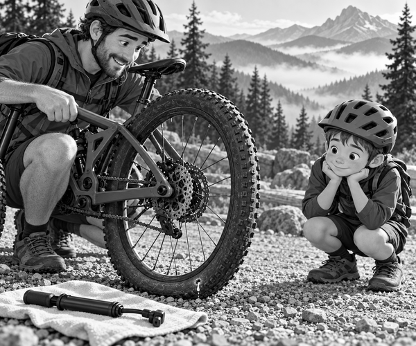

FICTION
Tom clicked his helmet strap.
Dad checked both bikes.
Today they would ride Raven Ridge.
Mum and Scout walked to the lower lookout.
Scout waited behind the wooden fence.
His black tail thumped the ground.
“See you at Raven View!” called Mum.
Tom and Dad pedalled up the trail.
The morning air felt cool.
Three ravens floated above the rocks.
The path twisted between pine trees.
Tom rolled over a patch of dry twigs.
Then he heard a strange sound.
Hissssss.
Tom stopped pedalling.
The sound stopped too.
He rolled on.
Hiss. Hiss. Hiss.
It came with every turn of his back wheel.
“Dad, my bike is whispering!” Tom called.
Dad looked back.
“Good listening,” he said. “Let us stop safely.”
They moved into a wide gravel bay.
Tom got off his bike.
Dad held it still.
A tiny white bubble sat on the tyre.
In its middle was a small thorn hole.
Bike fact: A tubeless tyre has no inner tube. It holds liquid sealant, which can close many small holes.
The wheel turned a little.
Hissssss.
Another milky drop came out.
Tom frowned.
“Are we stuck?” he asked.
“Not yet,” said Dad. “The sealant needs to reach the hole.”
He slowly turned the wheel.
The hole moved to the bottom.
Liquid sealant ran down inside the tyre.
It reached the hole.
Bubble. Pop.
The hiss grew quieter.
Then it stopped.
Dad waited for a full minute.
Tom watched the little white spot.
No more bubbles came out.
Dad checked the whole tyre.
There was no long cut.
The tyre was still firm, but it needed more air.
Tom took the small pump from Dad's bag.
Dad fixed it to the valve.
Push. Pull. Push. Pull.
The tyre grew firm again.
Repair fact: Sealant is good for small holes. A big cut may need a tyre plug, a spare tube, or a walk home.
Dad checked the repair once more.
Then Tom rode a slow circle in the gravel bay.
The wheel rolled smoothly.
There was no hiss.
They set off at an easy pace.
Soon Raven View appeared ahead.
Mum waved beside the fence.
Scout bounced with joy.
Tom parked his bike and checked the tyre again.
It was still firm.
“The smallest sound saved our ride,” Tom said.
Dad smiled.
High above them, a raven gave one loud croak.
1. What made the tyre hiss?
2. Why did Dad turn the hole to the bottom?
3. What did Tom take from Dad's bag?